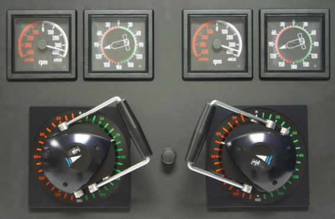

Propulsión Auxiliar (UPAs)
La Consola de Propulsión y Gobierno incorpora un panel de control desde el que el operador puede controlar hasta dos propulsores auxiliares (UPAS). El tipo y posición de estos propulsores es una característica del modelo del buque controlado.

El panel contiene los siguientes elementos:
Las UPAS pueden ser de orientación variable o de potencia variable y su funcionamiento varía en función del tipo de UPA.
UPA de orientación variable
Este tipo de UPA sólo se puede poner en funcionamiento si está desplegada. Para desplegar la UPA hay que desplazar la palanca hacia adelante y una vez desplegada, al mover la palanca de nuevo hacia adelante se enciende y al moverla hacia atrás se apaga. Con la UPA desplegada y encendida, al girar la palanca se selecciona la dirección del propulsor. Para recoger la UPA hay que mover la palanca a tope hacia atrás.
UPA de potencia variable
Esta UPA se pone en funcionamiento desplazando la palanca hacia adelante o hacia atrás y se apaga situándola en el centro. Una vez encendida la potencia se controla desplazando la palanca desde el centro al tope superior, para impulsar a estribor, o desde el centro hasta el tope inferior, para impulsar a babor.